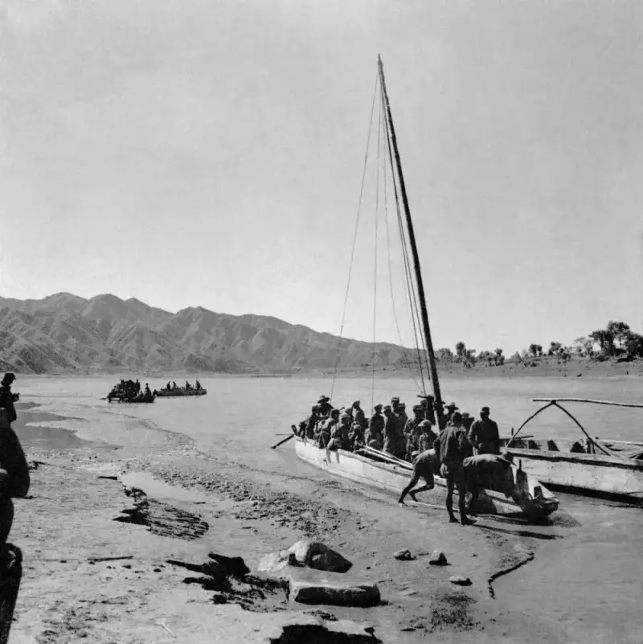
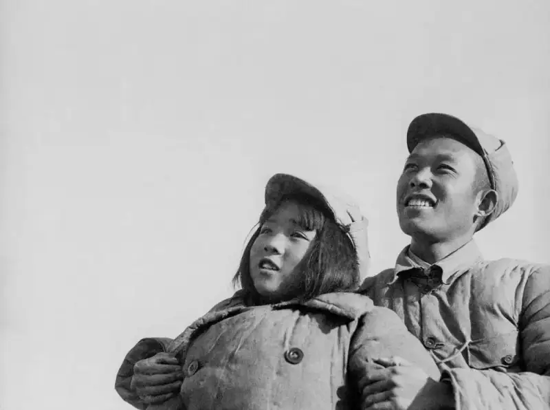
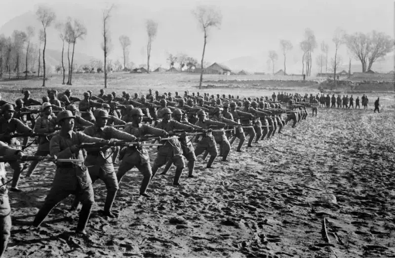
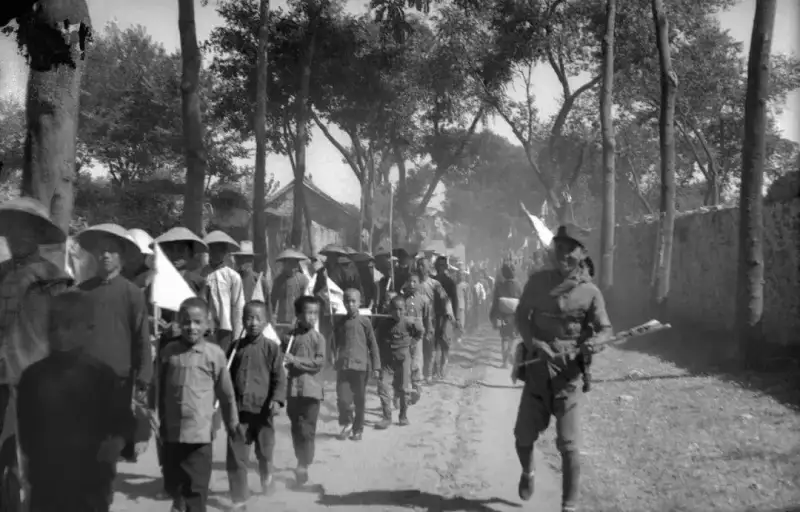
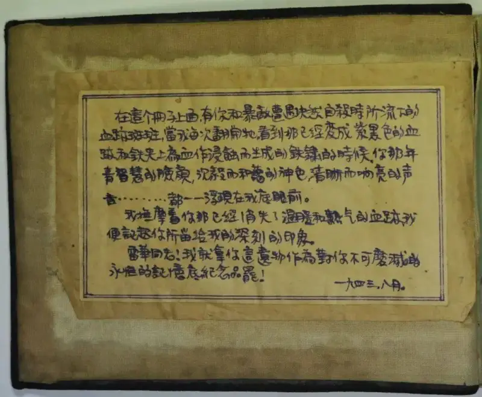
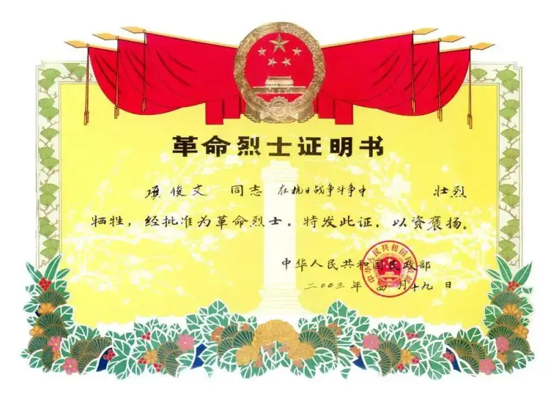
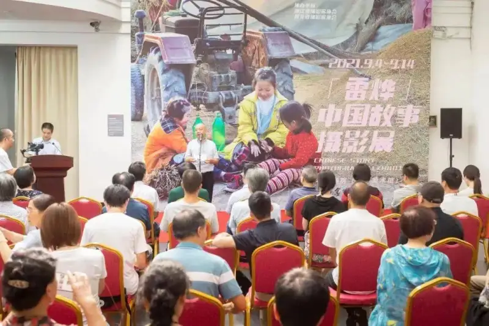

Published: 2022-08-02
Original link: https://www.cnphotos.net/academy/show-73.html
Source | Zhejiang Pictorial
Text and photos | Compiled by this magazine (except where credited)
Content guidance | Zhejiang Photographers Association
Editor's note: Smoke rose on all sides, bugles sounded, and shellfire went on and on. On the battlefield, bullets whistled past the ear, and the fine fur felt the signal of danger. Bombs burst at the feet, and bloodied dust flew in all directions, blotting out the sky, as if day turned to night in an instant. The smell of gunpowder and blood hung in the air. In the middle of this, a group of people took up their cameras and charged forward. In that moment they were not only war correspondents, but also fighters in the court of public opinion. They used the camera as a weapon to record the greed and cruelty of the invaders, and to portray the courage and fearlessness of those who defended the land.
General Secretary Xi Jinping has stressed that 'red resources are a witness to the arduous and glorious struggle of our Party, and they are our most precious spiritual wealth' (Xinhua, Beijing, September 30, 2021, 'Make Good Use of Red Resources, Carry Forward the Red Tradition, and Strive to Create New Achievements Worthy of History and the People'), and that 'we must protect, manage, and make good use of red resources with heart, feeling, and effort' (Xinhua, Beijing, June 30, 2022, 'Make Good Use of Red Resources and Spread Red Culture'). The year 2022 marks the 95th anniversary of the founding of the army. On this occasion, we revisit the photographs that Zhejiang war correspondents left behind in the 1930s and 1940s, when they pressed the shutter with their lives. This is both a tribute to the fallen heroes and a journey to trace our 'red roots,' as we consider the meaning and value of red images in the present day.
Lei Ye, Forever
Text | Zhu Lisha

• 1941, eastern Hebei, Crossing the Luan River at Dawn (photo by Lei Ye)

• 1942, war correspondent Lei Ye with Tian Hua, a child actor of the Anti-Enemy Drama Society (archive)
'You are called Tian Hua, and I am called Lei Hua. Let us two Hua take a photo together.' Whenever the well-known film actress Tian Hua looks at this photo, in which one small and one large Eighth Route Army soldier smile happily, Lei Ye's joke seems to ring in her ear. At the time, Tian Hua was only 12. Many comrades misread the characters and called Lei Ye 'Lei Hua.' But neither Lei Ye nor Lei Hua was his real name, and this once made it harder to find out who he really was. This photo helped us clear away the fog that had lasted for nearly 60 years.
Both of his parents died early, leaving Lei Ye with the heavy load of being both father and mother. Barely in his early teens, he had to leave middle school, go home to farm, and raise four younger brothers and sisters. His family's misfortune did not break the boy. In a letter to a close friend, he wrote: 'This warm sunshine is just like the light of early spring. It shines gently and tenderly on the grass shoots about to sprout. It hopes the shoots will grow, and grow fat and strong, so they will be of some use. Then they will not have come into this world for nothing.' That last line seems to have foretold a life that was anything but ordinary.
In 1937, when the War of Resistance broke out, he was 24. He pawned and sold the family home, used the money to buy medicine, cameras, and film for the revolution, married off his sisters, and placed his nine-year-old brother in a home for poor children. Then he set out for Yan'an, the sacred base of the revolution. With one hand he wrote poetry. In the tender voice of a man from the south, he painted the harsh campsite as a place of beauty: 'This is the moonlit night for the local troops to rest, / the moonlit night when the Harqin herds drive on. / It is the moonlit night when the grassland girl revives her childhood dream! / The sentinel watches the sparks of stars above the shade of the trees. / Tonight, our unit's bivouac lies on the quiet Na'er River!' With the other hand he held a camera. In the first moments after the Panjiayu massacre, he arrived at the scene and photographed the ruins of the village after the Japanese bombing, and the bones of innocent villagers piled by the wall. These photos became iron evidence 21 years later, when the villagers of Panjiayu brought suit in the Tokyo District Court in Japan.

• 1942, eastern Hebei, local troops in major training (photo by Lei Ye)

• 1942, one of the mass rallies in eastern Hebei marking the fifth anniversary of the July 7 Incident, with the army, government, and people (photo by Lei Ye)
Crossing the Shanhai Pass to the east, beyond the Great Wall to the north, and through Pingxi to the west, Lei Ye moved with the army across eastern Hebei, Rehe, and Liaoning. On the night of April 19, 1943, Japanese forces suddenly attacked northward and raided the office of the Jin-Cha-Ji Pictorial. When Lei Ye received the order to withdraw, he did not leave at once. Instead, he went from door to door, knocking to tell the villagers to evacuate. At dawn on April 20, the machine-gun fire of Japanese troops entering the village broke the silence. Lei Ye fired back with his pistol and covered his guard as they broke out. In the fog, he strayed into a valley. The enemy at once tightened the ring and closed in, trying to take him alive. Lei Ye smashed his camera, watch, and pen, and saved his last bullet for himself. His young, passionate life ended in that moment. His bloodstained diary, found in his arms by Zhao Lie, the political commissar of the Jin-Cha-Ji Pictorial, was later continued as the 'Zhao Lie Diary.' Zhao Lie himself died in battle a few months later.
In 1987, a memorial to loyal souls was erected in Fuping County, Hebei. The name 'Lei Ye' was carved on it as one of 37 revolutionary martyrs. He was among the first 300 famous anti-Japanese heroes listed by the Ministry of Civil Affairs of the People's Republic of China, and he is counted among the world's 100 outstanding war correspondents. But because no one knew his real name, word of his death could not be passed to his family.
His family, far away in Zhejiang, heard nothing after receiving his last letter home in 1942, signed 'Lei Yu.' For the next nearly 60 years, the family of Xiang Xiuwen, former vice chairman of the Hangzhou Committee of the Chinese People's Political Consultative Conference, searched for his older brother Xiang Junwen, who had gone to Yan'an to join the revolution. On countless nights, Xiang Xiuwen tossed and turned, unable to sleep. At the same time, Gao Yongzhen, former director of the Shijiazhuang Place Names Office and a former comrade of Lei Ye, was also searching for Lei Ye's true identity. 'Lei Ye' and 'Lei Yu' differ by only one character. Could they be the same man? On September 25, 2001, Xiang Xiuwen traveled north with his brother's photos and letters. After comparing records and photos, he finally confirmed that Lei Ye was his brother Xiang Junwen, who had been 'missing' for nearly 60 years.
The red banner never falls, and the revolutionary spirit is passed from hand to hand. In Jinhua, Lei Ye's birthplace, the local community is slowly bringing out his story, building a 'Lei Ye' legacy, and carrying on the 'red roots.' His former home has been restored and opened to the public for later generations to visit. The 'Lei Ye' China Story Photo Exhibition, and the Lei Ye Cup for news documentary and the 'Image: the Spirit of Jinhua in a New Era' themed exhibition, place Lei Ye's work side by side with selected works that show the face of China in a new era, telling the Chinese story through images. Small Party lessons on the life of Lei Ye carry the Party's innovative theory into ordinary homes and into the hearts of the young.

• The title page of Zhao Lie's diary (archive)

• Lei Ye's certificate as a revolutionary martyr (archive)

• The 'Lei Ye' China Story Photo Exhibition (photo by Zhong Lu)